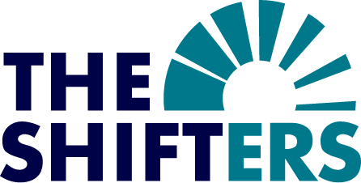

|  |
N° 54 — Novembre 2022 |
|
|---|---|---|
|
EDITORIAL
Novembre, un temps à projets ! |
Novembre n’est en général pas le mois préféré de l’année, à part pour les personnes qui sont nées en novembre (joyeux anniversaire à vous !). Les jours se raccourcissent, Halloween est passé et les fêtes de fin d’année sont encore loin, avec leurs débats endiablés autour du quinté gagnant viande, SUV, vacances à l’autre bout du monde, Greta Thunberg et le petit nouveau la soupe à la tomate featuring Van Gogh. Si tu cherches des projets enthousiasmants pour rendre cette période plus passionnante, il y a toujours des initiatives qui recrutent (à retrouver sur le site initiatives). Tu peux aussi te former sur de nouveaux sujets avec les formations FOIN ou échanger des idées sur le forum (voir les rubriques respectives plus loin dans la newsletter). |
|